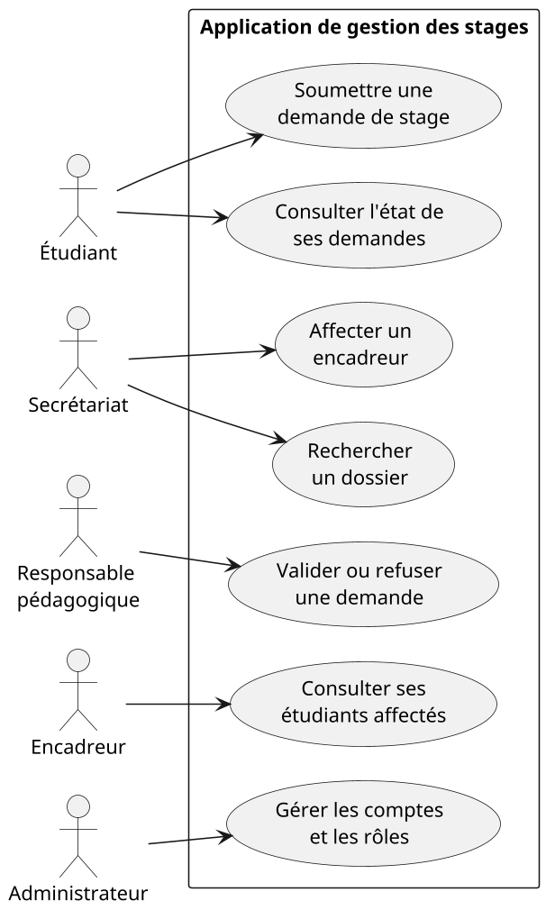
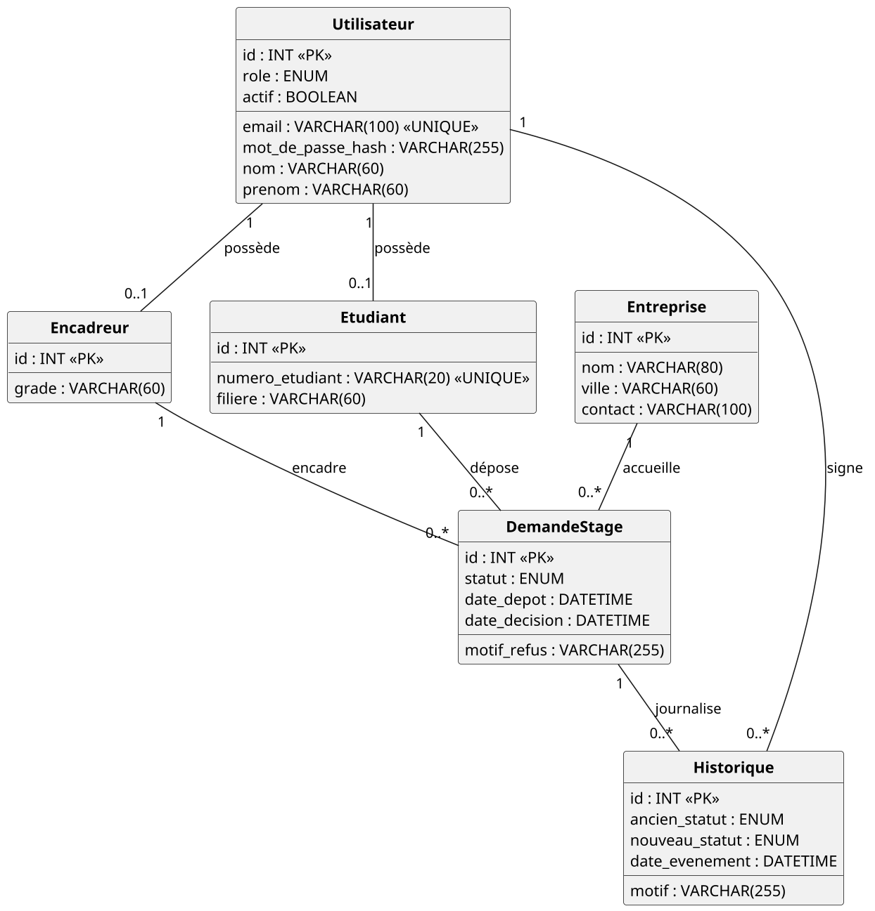

Cinq acteurs interagissent avec l'application. Chaque cas d'utilisation renvoie à une exigence fonctionnelle du TP2 ; tous supposent un utilisateur authentifié (EF-01), qui n'est donc pas représenté comme un cas autonome pour ne pas surcharger le diagramme.

| Cas d'utilisation | Acteur principal | Exigence |
|---|---|---|
| Se connecter | Tous les acteurs | EF-01 |
| Soumettre une demande de stage | Étudiant | EF-02 |
| Consulter l'état de ses demandes | Étudiant | EF-06 |
| Valider ou refuser une demande | Responsable | EF-03 |
| Affecter un encadreur | Secrétariat | EF-04 |
| Rechercher un dossier | Secrétariat | EF-07 |
| Consulter ses étudiants affectés | Encadreur | EF-05 |
| Gérer les comptes et les rôles | Administrateur | EF-08 |
Six classes suffisent au périmètre retenu. La classe Soutenance du fil rouge du cours n'apparaît pas : la programmation des soutenances est exclue du projet depuis le TP1 (reportée en v2).

| Association et multiplicités | Traduction dans le schéma relationnel |
|---|---|
| Utilisateur 1 — 0..1 Étudiant | etudiant.utilisateur_id NOT NULL UNIQUE |
| Utilisateur 1 — 0..1 Encadreur | encadreur.utilisateur_id NOT NULL UNIQUE |
| Étudiant 1 — 0..* DemandeStage | demande_stage.etudiant_id NOT NULL (FK) |
| Entreprise 1 — 0..* DemandeStage | demande_stage.entreprise_id NOT NULL (FK) |
| Encadreur 1 — 0..* DemandeStage | demande_stage.encadreur_id NULL (FK, affectation optionnelle) |
| DemandeStage 1 — 0..* Historique | historique.demande_id NOT NULL (FK, ON DELETE CASCADE) |
| Utilisateur 1 — 0..* Historique | historique.auteur_id NOT NULL (FK) |
Règle appliquée : une association 1—0..* devient une clé étrangère du côté « plusieurs » ; une association 1—0..1 devient une clé étrangère déclarée UNIQUE, ce qui interdit deux fiches pour un même compte.
Le scénario suit sept étapes ; chaque échec renvoie un code distinct, ce qui permet de le vérifier par un test.
| # | Acteur ou composant | Échec possible | Code |
|---|---|---|---|
| 1 | Contrôleur — vérifier la session | Session absente | 401 |
| 2 | DemandeRepository::findById | Demande inexistante | 404 |
| 3 | DemandeService — autorisation | Rôle insuffisant (étudiant qui valide) | 403 |
| 4 | DemandeService — statut | Transition interdite (déjà validée) | 409 |
| 5 | DemandeService — motif | Refus sans motif | 400 |
| 6 | Repository — UPDATE statut + INSERT historique (transaction) | Erreur technique | 500 + rollback |
| 7 | Contrôleur — réponse | — | 200 |
Les étapes 5 et 6 sont indissociables : le changement de statut et l'écriture dans l'historique forment une seule transaction (commit complet ou rollback complet).
Trois scripts versionnés reconstruisent la base à l'identique :
| Fichier | Contenu |
|---|---|
| 001_schema.sql | Création des six tables, clés primaires, clés étrangères, contraintes UNIQUE et CHECK, et vue v_dossiers_sans_encadreur. |
| 002_seed.sql | Jeu d'essai fictif : 8 comptes, 3 étudiants, 2 encadreurs, 2 entreprises, 4 demandes (une par statut), 5 lignes d'historique. |
| 003_verification.sql | Contrôles de chargement : comptages par table, répartition par statut, dossiers sans encadreur, cohérence de l'historique. |
Deux règles métier sont portées par la base et non par le code : un refus sans motif est rejeté par la contrainte ck_demande_motif, et une décision sans date de décision par ck_demande_decision. Même si le service applicatif oublie la vérification, la donnée incohérente ne peut pas être enregistrée. Les scripts sont rejouables : le schéma commence par des DROP TABLE dans l'ordre inverse des dépendances.
Résultat obtenu en exécutant les trois scripts sur une base vide, sous MariaDB 11.8.9 (conteneur Docker). Sortie brute de 003_verification.sql :
+---------------+--------+ | table_ | lignes | +---------------+--------+ | utilisateur | 8 | | etudiant | 3 | | encadreur | 2 | | entreprise | 2 | | demande_stage | 4 | | historique | 5 | +---------------+--------+ +-----------+----------+ | statut | demandes | +-----------+----------+ | BROUILLON | 1 | | SOUMISE | 1 | | VALIDEE | 1 | | REFUSEE | 1 | +-----------+----------+ +-------------------------+ | dossiers_sans_encadreur | +-------------------------+ | 0 | +-------------------------+ +----+------------+----------------+------------------------+ | id | demande_id | nouveau_statut | auteur | +----+------------+----------------+------------------------+ | 1 | 2 | SOUMISE | aicha.bello@univ.test | | 2 | 3 | SOUMISE | marc.dossou@univ.test | | 3 | 3 | VALIDEE | resp.pedago@univ.test | | 4 | 4 | SOUMISE | koffi.adjovi@univ.test | | 5 | 4 | REFUSEE | resp.pedago@univ.test | +----+------------+----------------+------------------------+
Contraintes éprouvées par des insertions invalides
| Cas testé | Requête | Erreur renvoyée par la base | Effet |
|---|---|---|---|
| Refus sans motif | INSERT … statut = 'REFUSEE', motif NULL | ERROR 4025 : CONSTRAINT `ck_demande_motif` failed | Aucune ligne créée |
| Entreprise inexistante | INSERT … entreprise_id = 999 | ERROR 1452 : foreign key constraint fails (`fk_demande_entreprise`) | Aucune ligne créée |
| Email en double | INSERT utilisateur avec un email existant | ERROR 1062 : Duplicate entry for key 'uk_utilisateur_email' | Aucune ligne créée |
| Validée sans date de décision | INSERT … statut = 'VALIDEE', date_decision NULL | ERROR 4025 : CONSTRAINT `ck_demande_decision` failed | Aucune ligne créée |
Après les quatre tentatives, les comptages sont restés identiques (4 demandes, 8 utilisateurs) : aucune écriture partielle n'a été conservée.
Le modèle est figé pour la v1 ; restent à écrire le code d'accès aux données (TP6) et les tests T-02 à T-11 annoncés dans la matrice du TP2. Les diagrammes sont versionnés en sources PlantUML (cas_usage.puml, classes.puml), donc régénérables : une correction du modèle se fait dans le texte, pas dans une image.